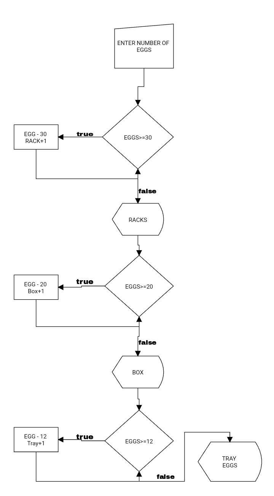

The egg container calculator program is designed to help users determine the number of egg containers they need based on the number of eggs they have. The program is built using Java programming language, and it provides an easy and efficient solution for calculating the required number of containers.
The program utilizes a while loop to determine the number of egg containers needed based on the number of eggs. It starts by asking the user to input the number of eggs they have using a scanner. It then initializes three variables - rack, box, and tray - to keep track of the number of containers needed. It also declares an array called 'array' with three integer values representing each container type's capacity.
Next, the program calls a method called 'submethod' from another class called 'myclass'. The 'submethod' method takes in the rack, box, tray, array, and eggs variables as parameters. Inside the 'submethod' method, the program uses a while loop to calculate the number of racks, boxes, and trays needed to store the eggs.
For each container type, the program checks if the number of eggs is greater than or equal to the capacity of the container type. If it is, the program increments the appropriate container variable (rack, box, or tray) and subtracts the capacity of the container type from the number of eggs. The loop continues until the number of eggs is less than the capacity of the smallest container type.
